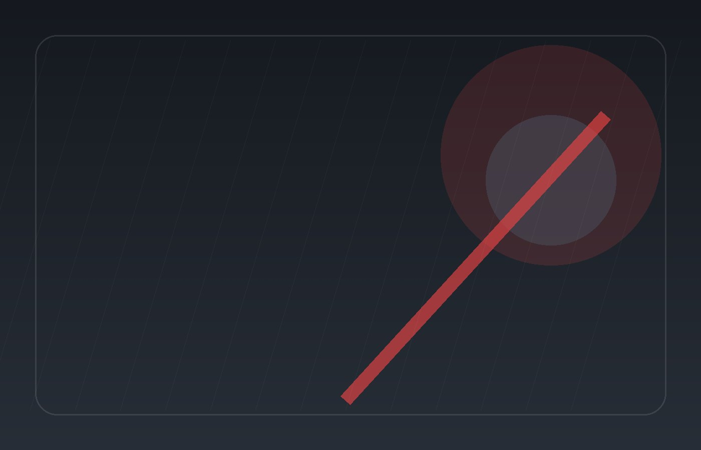

Maintenance
Oil & Inspection
Routine oil and inspection service

CAR WASH
Maintenance, repairs, diagnostics and fleet support are clear before the service request.
WHY IT WORKS
Visitors can understand what is offered before they contact the business. The next steps are visible and easier to act on.

ABOUT THE EXPERIENCE
Express tunnels and hand details—packages without mystery add-ons.
Everything is organized around the questions customers usually need answered before they take the next step.
About Scf EsSERVICES
Maintenance
Routine oil and inspection service
Repairs
Brake inspection and service
Maintenance
Tire rotation/replacement support
Repairs
Battery and electrical diagnostics
Diagnostics
Vehicle diagnostic service
Fleet
Maintenance support for business fleets
AUTOMOTIVE
Visitors can understand what is offered before they contact the business.
The next steps are visible and easier to act on.
Pages are organized around customer questions instead of filler content.
PROCESS
Clear next steps and responsibilities at this stage.
Clear next steps and responsibilities at this stage.
Clear next steps and responsibilities at this stage.
Clear next steps and responsibilities at this stage.
FAQ
Start with the primary contact path and share the specific outcome, timing and constraints involved.
No. Pricing, availability, policies and business details marked as demo should be verified before production.
Yes. Demo forms are intentionally non-transmitting until a real endpoint or workflow is configured.
NEXT STEP
Share what you need, your timing and the details that will help the team respond clearly.